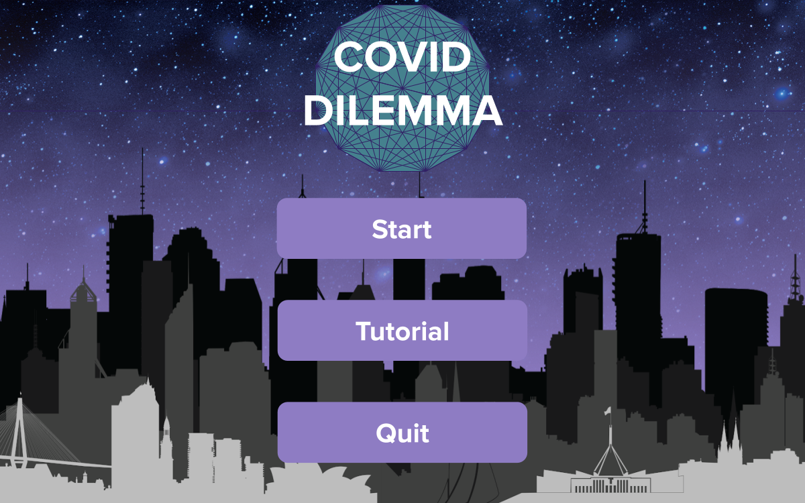

Past and Current Projects
QuickHealth
This is a program designed to link doctors with patients and different doctors, essentially a secured network with two roles, doctor and patient. (January 2020)
Click here to view the project
Mastermind
This is a game where the user can choose what settings of Mastermind they want to play, and play Mastermind virtually.(January 2019)
Click here to view the projectActually An Agenda
This is a program where a machine learning scheduler learns how to best schedule a user's schedule based on their deadlines, needs, and personal habits. (May 2020)
Click here to view the project

Covid Dilemma
This is a game where the user chooses decisions as either the Prime Minister or a civilian. Based on their decisions, the severity of COVID-19 changes. (June 2020)